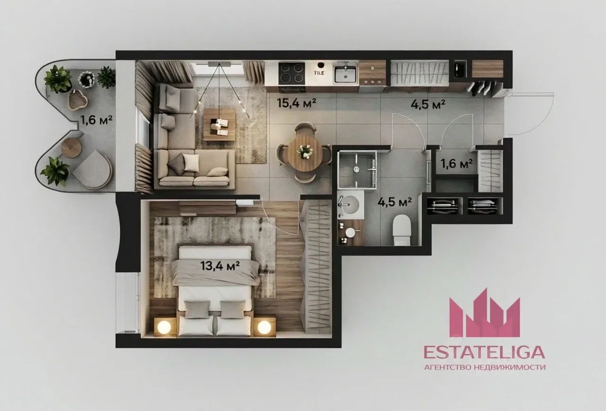
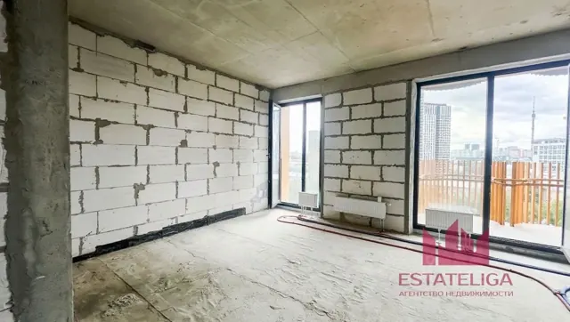
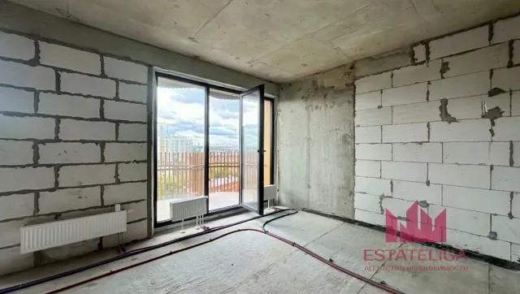
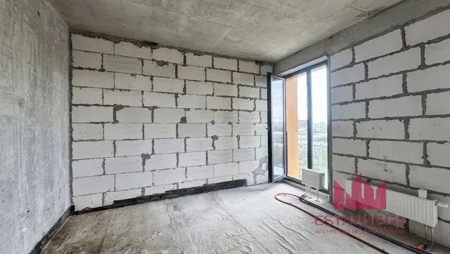
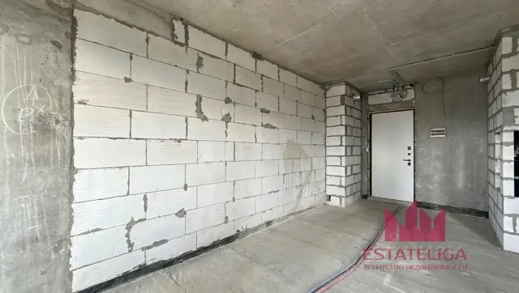
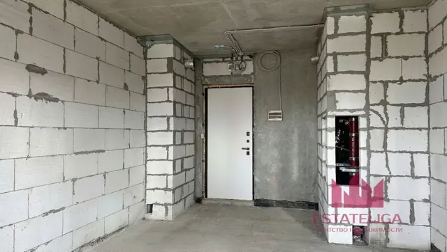
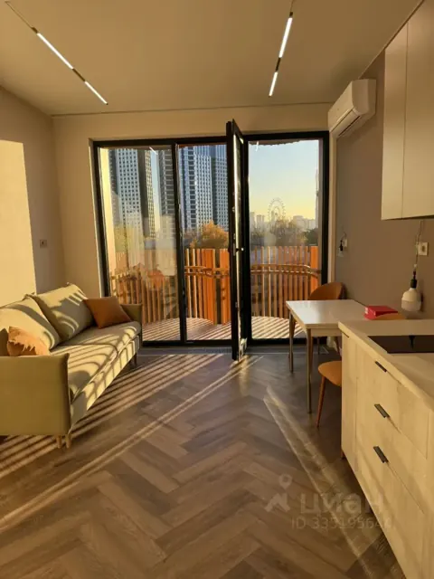
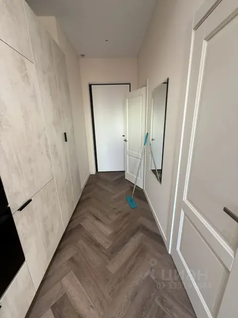
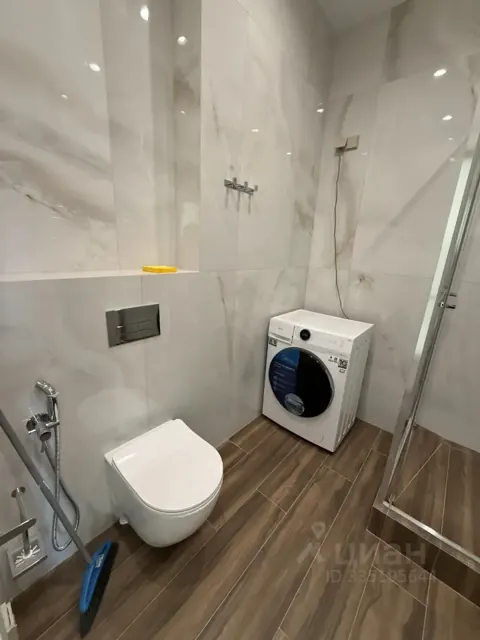
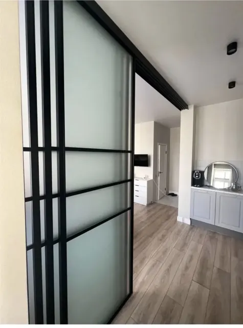

Фото квартиры
Пока здесь две похожие квартиры в этом же доме: одна в том виде, в каком её сдаёт застройщик, другая – с готовым ремонтом. Свои фото добавим после передачи ключей. Нажмите на фото, чтобы открыть его на весь экран.
Планировка
Похожая квартира

Евродвушка: кухня-гостиная и спальня
План из объявления о похожей квартире. По выписке ЕГРН площадь нашей квартиры – 39,9 м², планировка та же; чертёж из выписки – в «Дизайн → Чертёж ЕГРН», план зон в масштабе – в «Мокрые зоны».
Черновой вид
Похожая квартира в этом домеТак квартиру сдаёт застройщик: стены из газобетона и монолита, бетонный пол и потолок.











Что видно и что учесть в ремонте
- Перегородки уже выложены из газобетона – санузел, гардеробная, спальня. На приёмке проверить, так ли у вас.
- Трубы отопления лежат на полу и уйдут в стяжку: сфотографировать с рулеткой, потом в этих местах пол не сверлить.
- Батареи стоят у пола под окнами – не загораживать их мебелью вплотную.
- Стены из разных материалов: на стыках газобетона и бетона штукатурку армируют сеткой, иначе пойдут трещины.
- К нише со стояками нужен доступ после ремонта – оставить лючок.
- Входная дверь и щиток уже на месте, кабели связи заведены над дверью.
Фото из объявления агентства недвижимости.
С ремонтом
Такая же квартира этажом нижеТа же планировка с готовым ремонтом – можно посмотреть, как всё встаёт по месту.









Что взять на заметку
- Один пол «ёлочкой» по всей квартире – пространство выглядит больше, а в санузле – плитка под дерево в тон.
- Кухня одной линией до потолка – больше хранения, наверху не копится пыль.
- Стиральная машина помещается в санузле рядом с душем – отдельная ниша не нужна.
- Кондиционер в кухне-гостиной: трассу заложить на черновом этапе.
- Шкафы до потолка в прихожей и на кухне – максимум хранения на небольшой площади.
Фото из объявления на ЦИАН.
Референсы
ИдеиФото интерьеров и решений, которые нравятся. Под каждым – к какой заметке или разделу относится.




Реальные фото перегородок на полустенке – по ссылкам в «Дизайн → Реальные примеры»: французские объекты и изделия, московские производители.